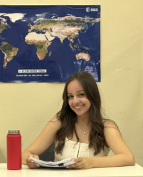

Άννα Λύρα
Γεια! Είμαι η Άννα, μεταπτυχιακή φοιτήτρια στο πρόγραμμα "Φυσική Εφαρμογών (Applied Physics)" του ΕΚΠΑ. Έχοντας πάθος για τη διδασκαλία, τα τελευταία δύο χρόνια διατηρώ ενεργή παρουσία στα social media. Στο Instagram, μέσω του λογαριασμού (@mikroi_einsteins), ανεβάζω θεωρία και παραδείγματα φυσικής. Στο TikTok, ως (@agirlinstem), εξηγώ με απλά λόγια ασκήσεις και καθημερινά παραδείγματα που όλοι μπορούμε να καταλάβουμε. Πιστεύω ότι η φυσική είναι γύρω μας, αρκεί να βρούμε τον τρόπο να τη δούμε!
Η σελίδα που δημιουργήσαμε με τον Χρήστο είναι μία ακόμη προσπάθεια να προσφέρουμε στους μαθητές έναν σύγχρονο τρόπο να προσεγγίσουν τη φυσική, μέσα από τυπολόγια, προσομοιώσεις και παραδείγματα από την καθημερινή ζωή.
Χρήστος Νικολάου
Γεια! Είμαι ο Χρήστος, προπτυχιακός φοιτητής στο Φυσικό του ΕΚΠΑ στην κατεύθυνση της Αστροφυσικής. Μου αρέσει πολύ η μοντελοποίηση συστημάτων του φυσικού κόσμου μέσω προσομοιώσεων, που μας βοηθούν να κατανοήσουμε πτυχές και έννοιες οι οποίες συχνά ξεπερνούν τη φυσική μας διαίσθηση.
Μαζί με την Άννα χτίσαμε το PhysicsHub για να μετατρέψουμε τη Φυσική από μια στείρα διαδικασία απομνημόνευσης ιδεών σε μια διαδραστική οντότητα, όπου οι μαθητές θα την απομυθοποιήσουν και θα καταλάβουν ότι η φυσική βρίσκεται παντού γύρω τους και τη χρησιμοποιούν καθημερινά.